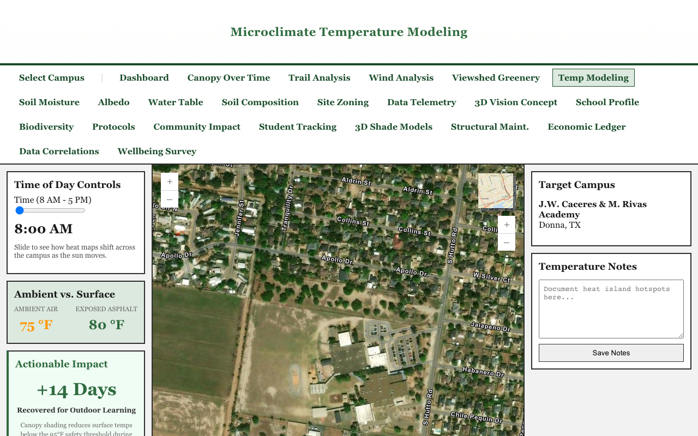

To satisfy the requirement for a "first heat-surface visual" without introducing external API dependencies in Month 1, we have implemented a dynamic zone-by-zone heat mapping engine. This leverages the existing ArcGIS library and the locally drawn campus zones.
Instead of relying on a static image, the dashboard calculates mock surface temperatures for specific zones (e.g., Asphalt, Trees/Grass, Buildings) depending on the time of day. As the user drags the Time of Day slider, the zones dynamically change color based on their simulated heat index.
Below are automated captures of the dashboard simulating these temperature zones throughout the day.
In the early morning, surface temperatures are generally uniform and cool across all zones. Asphalt has not yet absorbed significant solar radiation.

By midday, solar loading is heavily affecting the asphalt and parking lot zones, shifting them into the orange/red (danger) categories, while the tree canopy zones remain visibly cooler in the yellow/light-blue range.
During the critical after-school dismissal window, the heat divergence is at its peak. Impervious surfaces are radiating massive amounts of stored heat, while the shaded/vegetated zones demonstrate actionable cooling impact.